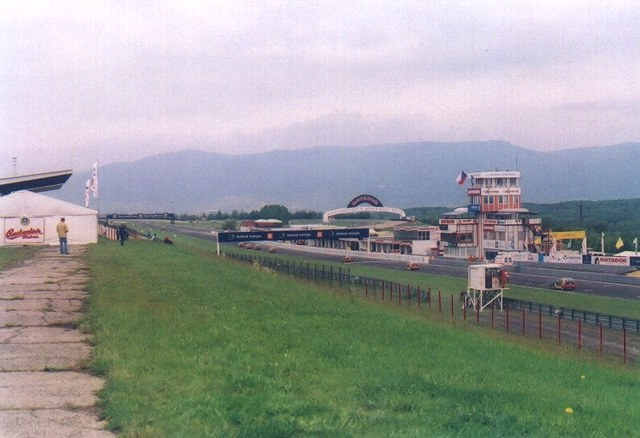

| Map of circuit location | ||
| The city of Most official website |
Autodrom Most, Czech Republic
| Type: | Permanent Road Course | |
| Length: | 2.577 Miles / 4.149 km | |
| Used: | 1983+ |
Numbers and arrows on map indicate the location and direction where the photographs
were taken.
Return to racingcircuits.net's Photo Archive Main Index

1. - Start/Finish straight & pit complex
2. - Approaching turn 1.
3. - Back Sector.
4. - Back Sector.
5. - Back Sector.
6. - Curves behind pits.
7. - Curves behind pits.
8. - Curves behind pits. In the background,
the castle "Hnevin"
Photographs ©Pavel Babka. Reproduced here with kind permission.